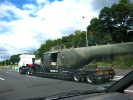
Penvins, au bord Est du Morbihan, un très vaste terrain en presqu'île, mais bordé par des talus qui empêchent de voir la mer si on ne monte pas dessus, dommage... Je fais la route le vendredi, avec mon puissant Expert, je double... un hélicoptère !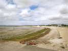
La plage est belle, le sable pas très fin, mais surtout, des algues qui s'amoncellent par vent d'Ouest !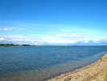
De l'autre côté de l'isthme, la rade est évidemment dégagée d'algues, mais à marée basse, c'est de la vase...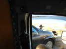
J'ai fait voler l'Albatros, je dîne tranquillement, quand des bruits bizarres me font sursauter : des corbeaux attaquent la voiture voisine ! En fait, ils mangent à grands coups de bec les insectes collés dessus... J'espère que la peinture est solide !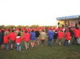
Au soir, les Scouts et Guides qui sont venus assurer les services se sont organisés une petite fête pour eux et les présents...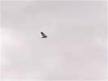
Samedi matin, déjà un oiseau dans le ciel. Pourtant, il n'y aura pas beaucoup de monofilistes (2 ou 3...), à part les Awita qui compensent par la quantité et la taille... Le balancier est reparti vers les pilotables...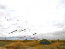
Bon, le vent de mer est correct, pas trop fort, les Awita ont sorti déjà une palanquée de gonflables de leurs soutes !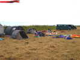
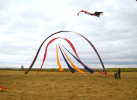
Il y a aussi une autre bande, qui montera entre autres ces banderoles et ces larges triangles...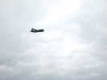
Un Bréguet Atlantic viendra nous faire un petit passage pour rappeler que Lann-Bihoué n'est pas très loin...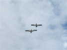
Plutôt que d'aller là-bas, tout au fond, je mettrai en l'air mes deux grues du parking à l'entrée ! J'ai 2 lignes, mais en fait reliées à 10 m des CV par un mousqueton. Ainsi, le lancement un+un est facile... J'aurai beaucoup de passage et de questions...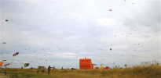
Outre les gros, les Awita ont sorti un flot continu de deltas qui meublent tout l'horizon ! Au premier plan, le bateau pirate gonflable pour les enfants...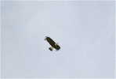
Quelques autres monofils quand même, comme le bel aigle de Wang (vous savez, le chinois du Bois de Boulogne) ! Je l'ai vu faire ses premiers pas il y a bien 10 ans, mais il reste bien beau !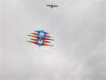
Et puis ce magnifique cellulaire à étages, qui vole impeccablement !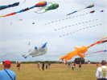
De plus en plus d'Awita-Birds, dont cet éléphant qu'ils ont créé eux-mêmes (conçu et réalisé) et qui vole bien par petit temps... Mais ils l'améliorent sans cesse... en le simplifiant !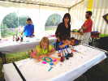
Dom anime l'habituel atelier de peinture sur cerf-volant. Ses réalisations volent très bien...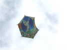
Encore un monofil, ce Rokkaku au décor Magritte de 2, 50 m de haut qui servira aussi au lâcher de bonbons quand le vent sera trop faible pour le Cody...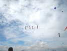
Damien Galibour est là, mais pas Fabrice, dommage. Damien mène un team occasionnel de 4 Révos qui s'amusent bien...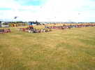
En souvenir, une photo aérienne va être prise, les scouts et tout le monde sont mobilisés pour écrire PENVINS sur le terrain ! La photo est promise sur le net, mais ce sera dur à monter car la télécommande était brouillée et la nacelle parkinsonnienne...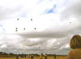
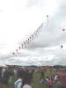
Il y a pas mal de public, finalement, cet après-midi pour admirer les pilotables entre autres...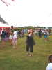
Maude n'est pas une grande experte du cerf-volant, mais commente quand même avec beaucoup d'aisance et sympathiquement la manifestation...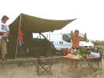
Sur le parking, certains se sont aménagé un coin sympathique...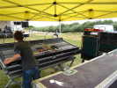
Les spécialistes préparent les animations du soir ! Ce petit pupitre devrait suffire...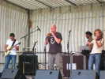
Dès 18 h, les artistes répètent, comme ce groupe de Rock-Folk qui joue de la musique bretonne arrangée à son goût, avec bombarde, violon, guitare électrique et batterie...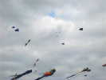
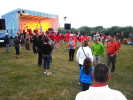
Les repas seront corrects dans l'ensemble, exceptés les horaires, toujours aléatoires (3/4 h de queue pour les frites !). Et la soirée commence, avec un vrai groupe breton : biniou, bombarde et accordéon diatonique... et des danses bretonnes pour un Fest-Noz très couru par les danseurs spécialistes...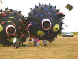
Bon, on passe au dimanche, le vol de nuit a été oublié, les projecteurs sont restés éteints, j'ai volé tout seul... On n'a pas payé la note ? Au matin, les enfants s'amusent sous les gros Fugus d'Awita...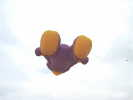
Le vent est encore un peu juste, mais les gros sont quand même montés, comme le Nounours géant...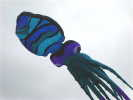
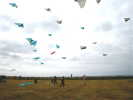
Tous les deltas des gens du fond, là, vous savez, sont déployés, pas de risque de les voir partir en mer comme l'an dernier !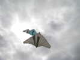
Ces deltas ne sont jamais repliés, et volent par trois sur la même ligne, sinon il faudrait commencer à démonter dès la fin du montage ! Ca fait un bel ensemble, étagé en largeur et en hauteur...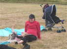
Tout est en l'air, temps libre pour le clan Awita ! Mademoiselle s'amuse à emmêler les lignes avec ses pieds !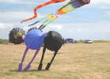
Au bas des deltas, les neunoeils flirtent par couple, cette année !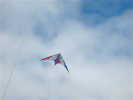
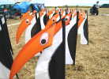
Pas de JdV, sauf cette troupe de manchots à grand bec devant le camp des monofilistes !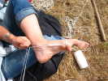
Blandine montre son adresse en tressant un bracelet pour Lorane !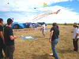
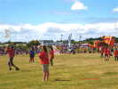
Les Scouts ont organisé un concours interne de création de cerf-volant. Celui de gauche ne vole pas du tout, sauf si on le lance en l'air. Le Sled avec la croix rouge vole un peu, mais est très instable...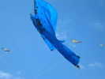
Celui-ci, une sorte de Kimono, n'est pas mal et volera un moment, avec une double bride longitudinale qui permet de monter-descendre...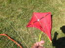
Ce Eddy pilotable, lui, n'a aucune chance de rester en l'air, monté comme ça. J'ai glissé qu'il fallait que la bride soit de l'autre côté, mais on m'a répondu que ça ne volait pas non plus...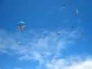
Pendant les trois jours, ces trains de Marconi ont survolé la droite du terrain sans faiblir...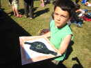
L'atelier continue à fonctionner, avec des réalisations artistiques intéressantes ! Si c\'est voulu, c\est bien !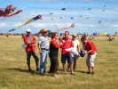
Le jury du concours scout se réunit : Alian Micquiaux, Maude, le chef scout et d'autres !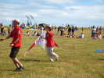
Et le gagnant est ce pilotable deux-lignes de Meudon, peut-être pas très original, mais qui vole lui...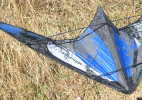
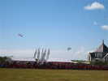
Devant la chapelle emblématique de Penvins, lâcher de bonbon. La nacelle a du mal à monter, et on devra lancer la moitié des bonbons à la main...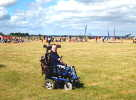
Sur l'aire de démo, c'est l'heure de Charles (je crois) qui présentera son delta sans problème...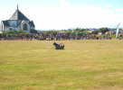
Quelques chars vont aussi évoluer sur la surface, dont celui-ci, très spécial, avec seulement 2 roues !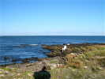
Mes grues sont bien stables, je vais faire un tour au bout de la pointe. Un musicien joue du biniou tout seul devant l'immensité !